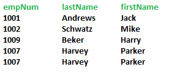
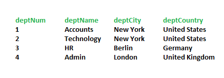

Database Normalization

Img source: CourseTalk
Database normalization is the process of structuring a database, usually a relational database, in accordance with a series of so-called normal forms in order to reduce data redundancy and improve data integrity.
- 1. Flexible Database Design
- 2. Reduce Data redundancy
- 3. Improves the data integrity
- 4. Makes an organised Database
Normalization types
- 1. 1NF
- 2. 2NF
- 3. 3NF
- 4. BOYCE CORD NF

For a table to be in the first Normal Form;
1. It should not have repeating values in a group.2. It should not have repeating groups.
For a table to be in the second Normal Form;
1. Should be in 1NF2. Any non-key field should entirely depend on its primary key.
3. No partial dependency
4. Occurs when there is a composite key.
Employees table 
Departments table 
EmployeesDept Table

For a table to be in the third Normal Form;
1. Should be in 2NF2. Any non-key field depend on other no-key field.
3. No transitive dependency
4. Occurs when you can guess value of any column from no-key column.
What is a KEY?
A KEY is a value used to identify
a record in a table uniquely. A KEY could be a single column or
combination of multiple columns.
Columns in a table that are NOT used to identify a record uniquely are
called non-key columns.
Primary Key: A primary key is a
single column value used to identify a database record uniquely.
Composite Key: A composite key is
a primary key composed of multiple columns used to identify a record
uniquely
Partial dependency: When any of
the no-key column does not depend on all primary key column.
Transitive dependency:A transitive
dependency occurs when one non-prime column is dependent on another
non-prime column.
What problems do we face when a table is not normalized?
Update anomaly: An update anomaly is a data inconsistency that results from data redundancy and a partial update.Insert anomaly: An insertion anomaly is the inability to add data to the database due to the absence of other data.
Delete anomaly: A deletion anomaly is the unintended loss of data due to deletion of other data.
Conclusion
We've just learned what database normalization is and how it helps us reduce redundancy in our tables. We've also learned different types of normal forms such as 1NF, 2NF, 3NF ... and highlighted different types of anomalies such as deletion, insertion, and update which arises when our table in not normalized?That was it!